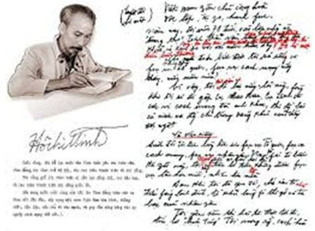
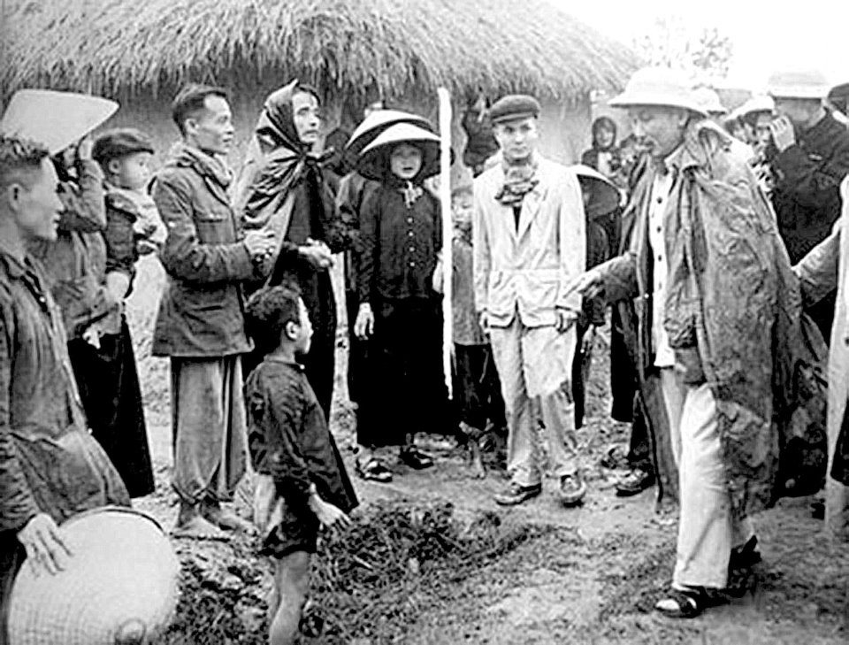
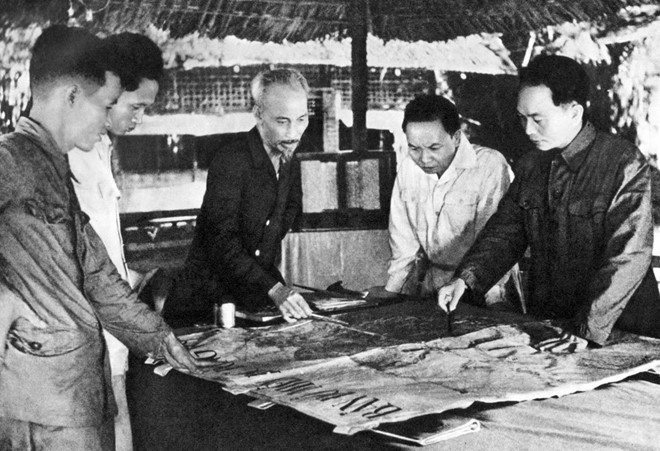
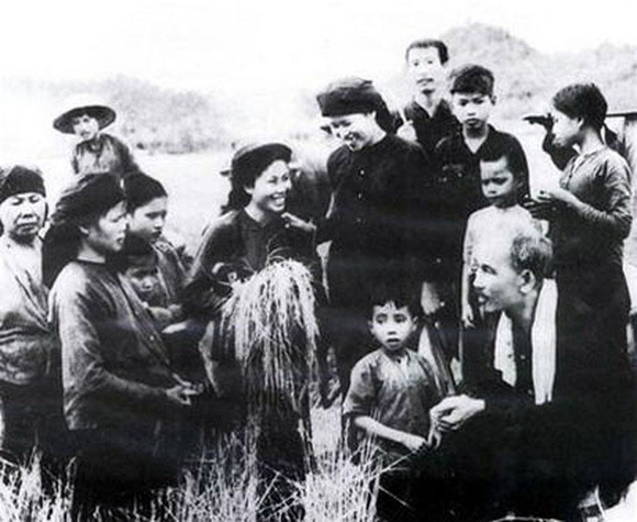
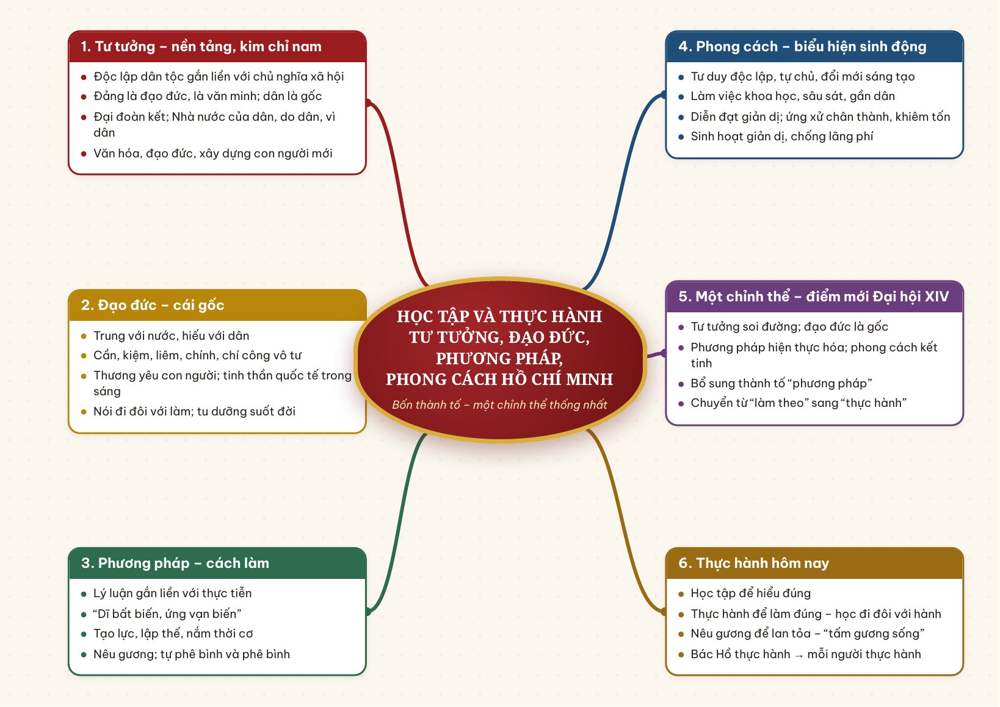

Chủ đề 3
Học tập và thực hành tư tưởng, đạo đức, phương pháp, phong cách Hồ Chí Minh
Lời dạy của Bác
“Một tấm gương sống còn có giá trị hơn một trăm bài diễn văn tuyên truyền.”
- 1Học tập để hiểu đúng
- 2Thực hành để làm đúng
- 3Nêu gương để lan tỏa

Bốn thành tố – một chỉnh thể thống nhất
Đại hội XIV: từ “làm theo” đến “thực hành”
1›
Tư tưởng Hồ Chí Minh
Nền tảng tư tưởng, kim chỉ nam
- Độc lập dân tộc gắn liền với chủ nghĩa xã hội
- Đảng cầm quyền “là đạo đức, là văn minh”
- Đại đoàn kết dân tộc, đoàn kết quốc tế
- Nhà nước của dân, do dân, vì dân
- Văn hóa, đạo đức, xây dựng con người mới …
“…việc gì có lợi cho dân phải hết sức làm, việc gì có hại cho dân phải hết sức tránh.”
2›
Đạo đức Hồ Chí Minh
Cái gốc của người cách mạng
- Trung với nước, hiếu với dân
- Cần, kiệm, liêm, chính, chí công vô tư
- Thương yêu con người, sống có tình nghĩa
- Tinh thần quốc tế trong sáng
“Đạo đức cách mạng … tận trung với nước, tận hiếu với dân.”
3›
Phương pháp Hồ Chí Minh
Cách làm để hiện thực hóa
- Lý luận gắn liền với thực tiễn
- “Dĩ bất biến, ứng vạn biến”
- Tạo lực, lập thế, nắm thời cơ
- Nêu gương; tự phê bình và phê bình
“…tâm đã đồng, lại phải biết cách làm thì làm mới chóng.”
4›
Phong cách Hồ Chí Minh
Giản dị, gần dân, khoa học, nêu gương
- Tư duy độc lập, tự chủ, sáng tạo
- Làm việc khoa học, sâu sát, gần dân
- Diễn đạt ngắn gọn, giản dị, dễ hiểu
- Ứng xử chân thành, khiêm tốn
- Sinh hoạt giản dị, chống lãng phí
“Muốn hướng dẫn Nhân dân, mình phải làm mực thước cho người ta bắt chước.”
Sơ đồ tư duy khái quát
